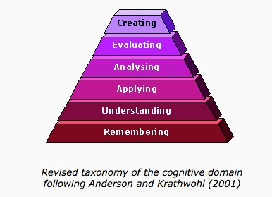
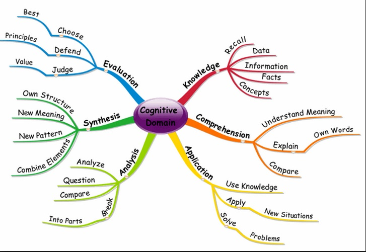

2.4 Cognitivismo
2.4.1 O que é cognitivismo?
Uma crítica óbvia ao behaviorismo é que ele trata os seres humanos como uma caixa preta, na qual as entradas e as saídas são conhecidas e mensuráveis, mas o que ocorre lá dentro é ignorado ou considerado desinteressante. No entanto, os seres humanos possuem capacidade de pensamento consciente, tomada de decisões, emoções e a habilidade de expressar ideias por meio do discurso social, tudo isso sendo altamente significativo para a aprendizagem. Assim, provavelmente obteremos uma melhor compreensão da aprendizagem se tentarmos descobrir o que acontece dentro da caixa preta.
Os cognitivistas, portanto, focam na identificação de processos mentais — representações internas e conscientes do mundo — que consideram essenciais para a aprendizagem humana. Fontana (1981) resume a abordagem cognitiva da aprendizagem da seguinte forma:
“A abordagem cognitiva... defende que se queremos compreender a aprendizagem não podemos nos limitar ao comportamento observável, mas também devemos nos preocupar com a capacidade do aprendiz de reorganizar mentalmente seu campo psicológico (isto é, seu mundo interior de conceitos, memórias, etc.) em resposta à experiência. Esta última abordagem, portanto, enfatiza não apenas o ambiente, mas a maneira pela qual o indivíduo interpreta e tenta dar sentido ao ambiente. Ela vê o indivíduo não como um produto mecânico de seu ambiente, mas como um agente ativo no processo de aprendizagem, tentando deliberadamente processar e categorizar o fluxo de informações que o mundo externo lhe apresenta.” (p. 148)
Assim, a busca por regras, princípios ou relações no processamento de novas informações, e a busca por significado e consistência ao reconciliar novas informações com conhecimentos anteriores, são conceitos-chave na psicologia cognitiva. A psicologia cognitiva se preocupa em identificar e descrever os processos mentais que afetam a aprendizagem, o pensamento e o comportamento, bem como as condições que influenciam esses processos mentais.
2.4.2 Teoria da aprendizagem cognitivista
As teorias do cognitivismo mais amplamente utilizadas na educação baseiam-se nas taxonomias de objetivos de aprendizagem de Bloom (Bloom et al., 1956), que estão relacionadas ao desenvolvimento de diferentes tipos de habilidades ou formas de aprendizagem. Bloom e seus colegas afirmavam que existem três domínios importantes de aprendizagem:
- cognitivo (pensar)
- afetivo (sentir)
- psicomotor (fazer).
O cognitivismo se concentra no domínio do 'pensar'. Em anos mais recentes, Anderson e Krathwohl (2000) modificaram levemente a taxonomia original de Bloom et al., acrescentando a 'criação' de novos conhecimentos:


Imagem: © Atherton J S (2013) CC-NC-ND

Bloom et al. também argumentaram que existe uma hierarquia de aprendizagem, o que significa que os aprendizes precisam progredir por cada um dos níveis, desde a lembrança até a avaliação/criação. À medida que os psicólogos se aprofundam em cada uma dessas atividades cognitivas para compreender os processos mentais subjacentes, isso se torna um exercício cada vez mais reducionista (ver Figura 2.4.3 abaixo).



2.4.3 Aplicações da teoria de aprendizagem cognitivista
As abordagens cognitivas da aprendizagem, com foco na compreensão, abstração, análise, síntese, generalização, avaliação, tomada de decisões, resolução de problemas e pensamento criativo, parecem se adequar muito melhor ao ensino superior do que o behaviorismo; mas mesmo na educação básica, uma abordagem cognitivista significaria, por exemplo, focar em ensinar os aprendizes a como aprender, no desenvolvimento de processos mentais mais fortes ou novos para aprendizagens futuras, e no desenvolvimento de uma compreensão mais profunda e em constante mudança de conceitos e ideias.
As abordagens cognitivas da aprendizagem cobrem uma gama muito ampla. No extremo objetivista, os cognitivistas consideram os processos mentais básicos como genéticos ou inatos, mas que podem ser programados ou modificados por fatores externos, como novas experiências. Os primeiros cognitivistas, em particular, interessavam-se pelo conceito de mente como computador, e mais recentemente a pesquisa cerebral levou a uma busca para vincular a cognição ao desenvolvimento e fortalecimento de redes neurais no cérebro.
Em termos práticos, esse conceito de mente como computador levou a vários desenvolvimentos baseados em tecnologia no ensino, incluindo:
- sistemas de tutoria inteligentes, uma versão mais refinada das máquinas de ensino, baseados na divisão da aprendizagem em uma série de etapas gerenciáveis, e na análise das respostas dos aprendizes para direcioná-los à próxima etapa mais adequada. A aprendizagem adaptativa é a extensão mais recente de tais desenvolvimentos;
- inteligência artificial, que busca representar em software os processos mentais usados na aprendizagem humana (o que, se bem-sucedido, resultaria em computadores substituindo muitas atividades humanas — como o ensino, se a aprendizagem for considerada dentro de um framework objetivista);
- resultados de aprendizagem predeterminados, baseados na análise e no desenvolvimento de diferentes tipos de atividades cognitivas, como compreensão, análise, síntese e avaliação;
- aprendizagem baseada em problemas, baseada na análise dos processos de pensamento que solucionadores de problemas bem-sucedidos usam para resolver problemas;
- abordagens de design instrucional que tentam gerenciar o planejamento do ensino para garantir a conquista bem-sucedida de resultados ou objetivos de aprendizagem predeterminados.
Os cognitivistas ampliaram nossa compreensão sobre como os seres humanos processam e dão sentido a novas informações, como acessamos, interpretamos, integramos, processamos, organizamos e gerenciamos o conhecimento, e nos deram uma melhor compreensão das condições que afetam os estados mentais dos aprendizes.
Referências
Anderson, L. and Krathwohl, D. (eds.) (2001). A Taxonomy for Learning, Teaching, and Assessing: A Revision of Bloom’s Taxonomy of Educational Objectives New York: Longman
Atherton J. S. (2013) Learning and Teaching; Bloom’s taxonomy, consultado em 7 de maio de 2019
Bloom, B. S.; Engelhart, M. D.; Furst, E. J.; Hill, W. H.; Krathwohl, D. R. (1956). Taxonomy of educational objectives: The classification of educational goals. Handbook I: Cognitive domain. New York: David McKay Company
Fontana, D. (1981) Psychology for Teachers London: Macmillan/British Psychological Society
Atividade 2.4 Definindo os limites do cognitivismo
1. Quais áreas do conhecimento você acha que seriam melhor 'ensinadas' ou aprendidas por meio de uma abordagem cognitivista?
2. Quais áreas do conhecimento você acha que NÃO seriam adequadamente ensinadas por meio de uma abordagem cognitivista?
3. Quais são seus motivos?
Feedback a ser incluído